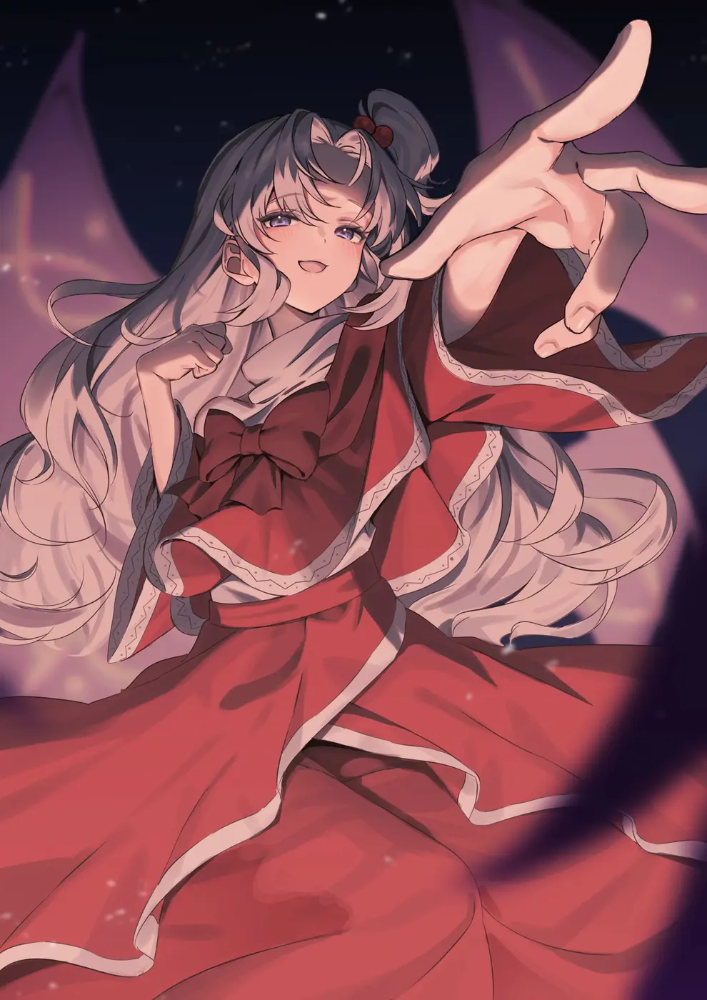
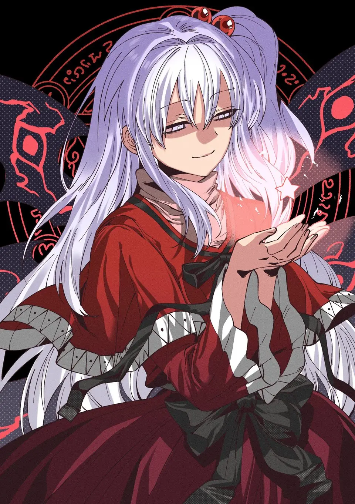
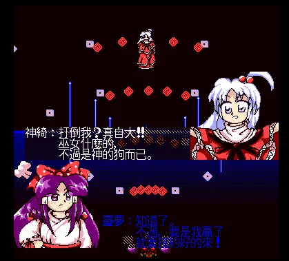
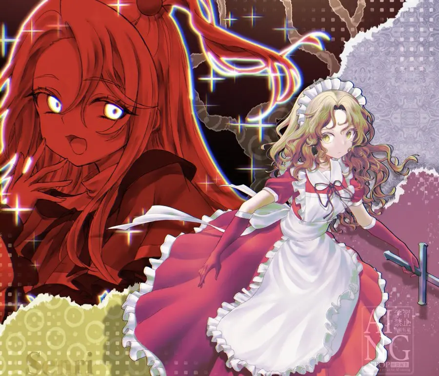
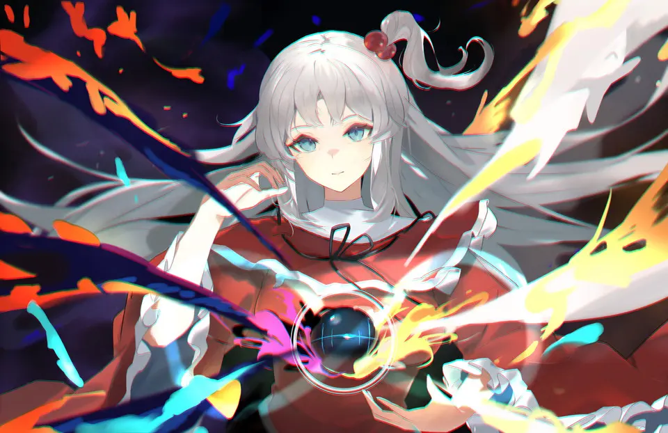

随和、放任
魔界人跑去人间界，她的回答是「我也说不了什么的」。手下也不太听她的话。
東方怪綺談 ～ Mystic Square · FINAL STAGE
1998 年《东方怪绮谈》的最终 BOSS，创造了整个魔界的神。原作只给她留下几段对话、一首主题曲和会变色的六翼，其余的样子，都是后来的人一点点补上的。
每年 11 月 8 日是神绮之日

STAGE 1 · PROFILE
这里只收 ZUN 本人给出的信息（一设）。怪绮谈没有角色设定文档，下面每一条都来自游戏对话或附带文档。

FINAL STAGE · 神戦 ～ Dream Battle
魔物涌进人间界，其实是魔界民间旅行公司安排的观光路线。四位自机各怀目的闯进魔界，在魔界尽头见到了她。
台词节选自原作 6 面，中文译文来自 THBWiki（CC BY-NC-SA 3.0）。

BOSS PATTERN · 9 PHASES
据 Omake.txt 的攻略，神绮战分九段。翅膀长出、变黑、消失，背景从蓝转黑再转红。这一页的背景和上方的血条，也在跟着你往下推进。
文档写的是「黑い翼」，PC-98 画面上显示为紫红色。据 ニコニコ大百科，第 8 段的弹幕后来被《东方星莲船》圣白莲的符卡「大魔法『魔神復誦』」借用。
CANON · 一设
平时随和，被冒犯就高傲，输了有点孩子气。原作没有体现「慈母」的一面。
魔界人跑去人间界，她的回答是「我也说不了什么的」。手下也不太听她的话。
「巫女なんて、神の犬のくせに」
「所詮人間のくせに！！」
输了以后：「为什么那么强啊～」「别再来了哦。」
魅魔谎称自己是人间界的神，她信了，还反问「八百万分之一的神」为什么要来。

ORIGIN · 零设
零设是一设的来源：ZUN 借来的名字、形象和典故。标签表示可信程度。
ZUN 说神绮和梦子本想做成与以往不同的风格，最后还是做回了老样子，「银白色的头发和中途生出的６张翅膀，都是那个的痕迹」。
「綺」取自作品名《怪綺談》（化用「怪奇談」），与「神奇」同音；「神祇」按汉音也读しんき。ZUN 在后记里嘀咕：「しかし魔界の神の名前が漢字。う～ん。」
万魔殿参考了《真·女神转生 II》的路西法宫殿，六翼可能也来自那里的路西法。Pandæmonium 一词出自弥尔顿的《失乐园》。
5 面标题「最後の審判」。背景是鲁宾之杯彩窗：看作花瓶，也能看作两张对视的脸。4 面冰雪世界则对应《神曲》的科库托斯与佛教红莲地狱。
她把幻想乡的神叫作「八百万分之一的神」，于是有了「神绮是唯一神」的说法。
THBWiki 把她的配色列为「也许有圣诞老人风格」「也许有《守护月天》风格」。
FANON · 二设
原作没写的部分，由同人一代代补完。左边是流传的样子，右边是它在一设里的依据。
CP神アリ（母女组）夢神（梦神组）魅神组
梗神と聞いて歩いて来ました → 歩いてお帰りハンマーの人最终鬼畜神綺ファンの聖地リンク
爱称神綺様ちんきママお母様
ART · 相关美术
官方只有 ZUN 画的 PC-98 像素立绘和 BOSS 点阵，Win 版至今没有新立绘。本页配色取样自原作像素图（按 4 bit/通道量化，近似值）。
5 面万魔殿的背景：花瓶的轮廓，也是两张对视的脸。
《东方星莲船》的魔界与法界：红黑色的雾，天空盖着方格纹。
神绮战最后一段的背景，也出现在星莲船 6 面的法界。


MUSIC · THEME OF SHINKI
最终 BOSS 曲。ZUN 说想写一首「兼具气势与可爱」的曲子。
かっこよさとかわいさを合わせた曲を目指しましたね。
メインのメロディはかなり覚えやすくて、いい感じなのかな。
だいたい、気に入ってます。我一直都为能作出在气势与可爱间取得微妙平衡的曲子而努力着。主旋律比较容易给人留下些印象，大概感觉不错。大致很喜欢。
ZUN 回忆：神绮的攻击因为调整难度改来改去，是辛苦之作。
AN ORDEAL FROM GOD：ZUN 为同人游戏《神魔讨绮传》（2008）写的神绮关曲目。
在 THBWiki 查看曲目 ↗ENDING · Endless
Good End 的曲名叫「Endless」。神绮没有在 ZUN 的作品里复出，但她一直没有离场。
CONTINUE?